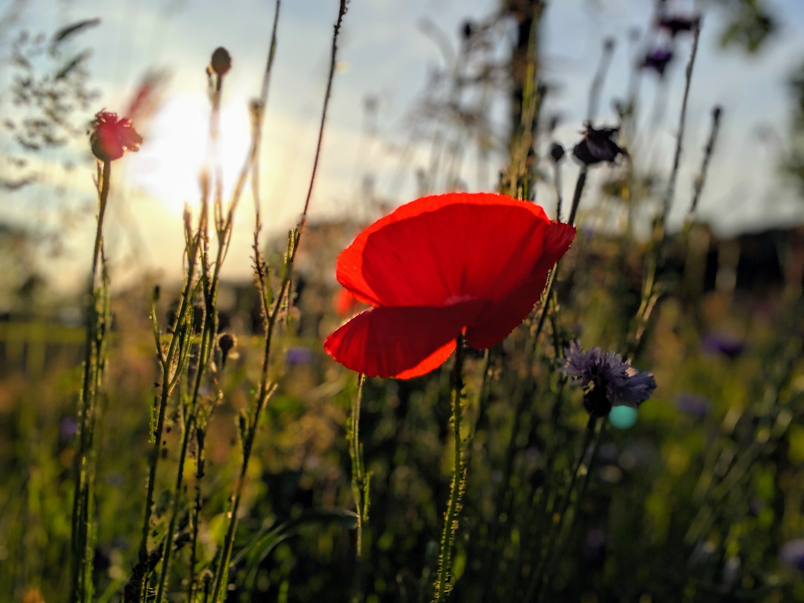
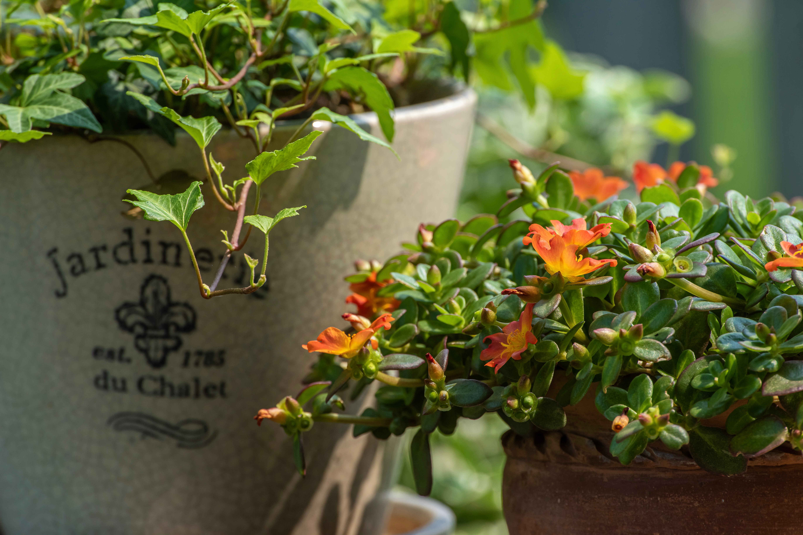

Calendar 2024
- New Year's Garden Kickoff - January 15
- Indoor Plant Care Masterclass - February 10
- Spring Seed Starting Seminar - March 5
- Container Gardening Workshop - March 22
- Herb Gardening Basics - April 12
- Vertical Garden Design - April 28
- Sustainable Gardening Symposium - May 9
- Rooftop Garden Planning - May 26
- Kids' Gardening Day - June 14
- Urban Composting Workshop - June 30
- Introduction to Urban Gardening - July 7
- Summer Plant Care Tips - July 25
- Gardening for Stress Relief - August 12
- Balcony Garden Essentials - August 29
- Fall Garden Preparation - September 5
- Indoor Herb Garden Setup - September 20
- Harvesting and Preserving Herbs - October 8
- Winter Garden Planning - October 25
- Holiday Plant Decoration - November 11
- Seasonal Garden Cleanup - November 27
- Winter Plant Care Strategies - December 22
Workshops
New Year's Garden Kickoff

Date: January 15, 2024
Location: City Greenery, Cityville
Speaker: Dr. Emily Greenleaf
Details: Start your gardening journey for the year with expert insights and seasonal tips.
Indoor Plant Care Masterclass

Date: February 10, 2024
Location: Urban Oasis Community Center, Cityville
Speaker: Samara Fernandez
Details: Learn essential care techniques for healthy and thriving indoor plants.
Spring Seed Starting Seminar
Date: March 5, 2024
Location: GreenThumb Garden Center, Cityville
Speaker: Marcus Peterson
Details: Kickstart your spring garden by mastering the art of seed starting.
Container Gardening Workshop
Date: March 22, 2024
Location: City Space Gardens, Cityville
Speaker: Dr. Taylor Reynolds
Details: Discover the beauty of container gardening for small urban spaces.
Herb Gardening Basics

Date: April 12, 2024
Location: Herb Haven Store, Cityville
Speaker: Chloe Andrews
Details: Dive into the world of herbs and learn to grow them at home effortlessly.
Vertical Garden Design

Date: April 28, 2024
Location: Green Living Center, Cityville
Speaker: Michael Carter
Details: Explore innovative vertical gardening techniques for limited spaces.